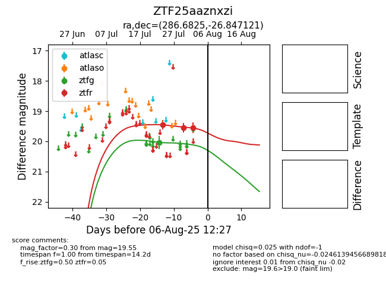

Target ZTF25aaznxzi at 2025-08-06 17:07, see:
FINK: fink-portal.org/ZTF25aaznxzi
Lasair: lasair-ztf.lsst.ac.uk/objects/ZTF25aaznxzi
ALeRCE: alerce.online/object/ZTF25aaznxzi
alt names
ZTF25aaznxzi (ztf,fink)
coordinates:
equatorial (ra, dec) = (286.6825,-26.84712)
galactic (l, b) = (10.0999,-15.00308)
photometry
last ztfg=20.03, ztfr=19.55
1 ztfg, 3 ztfr detections
